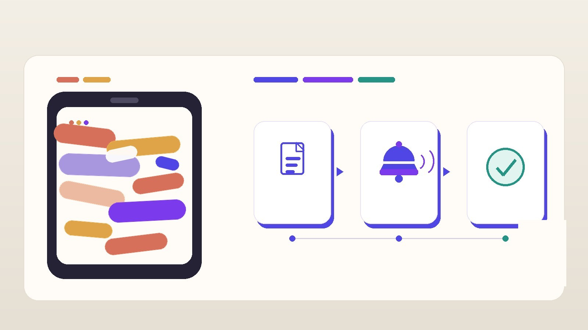

WhatsApp Isn't Your School ERP: Fee Due → Parent Alert → Paid, Without the Chaos
If the only proof that a fee was paid is a UPI screenshot in a WhatsApp chat, the chat has become your system of record, and that is the problem to fix, not the parents. School fee reminder automation means the due lives in the ERP, the parent gets an official alert with a way to pay, and the payment updates the student's fee status without anyone matching screenshots at 6 pm. In ConnectEdu, that flow runs through the fee and parent communication modules: fee due → parent alert → paid → status updated.
The same lesson holds outside schools. When a chat app is where the truth lives, you do not have a process. You have a scroll.

Why is a WhatsApp group a bad system of record?
WhatsApp is good at conversation. It is bad at being a ledger.
Watch a fee week in a school office that runs on groups. The clerk pastes the same "please pay fees" note into three class groups. Parents reply "paid" or send screenshots. Someone else asks which fee head it was. A parent with two children in different classes mutes both groups. By the end of the week the clerk's phone holds the real record, and the ERP is days behind.
None of that is a people failure. The tool simply has no idea what is due, from whom, or whether it was paid. So the office fills the gap by memory and phone calls.
The ConnectEdu team wrote this up for school leaders in reducing fee defaulters with reminders and UPI. The failure modes they list will be familiar: reminders that go out only after the due date, messages with no amount or pay link, payment that lives in a portal parents rarely open, UPI screenshots becoming the ledger, and class groups turning into public money talk. A lot of what looks like a "defaulter" is a parent who forgot, or was confused about the amount. That is a process gap, not a recovery problem.
I call this a process smell. The chat is not broken. It is being asked to do a job it was never built for.
What does the structured flow look like inside ConnectEdu?
ConnectEdu is our school ERP with parent engagement: web for school teams, mobile for parents, teachers, and bus drivers. Fees and parent communication sit on the same stack, so the fee flow has four plain steps.
1. Fee due. The office records the due in the fee module against the student. Fee structures can be set up for terms, tuition, transport, and extra-curricular fees, including instalments. The due is a record, not a message.
2. Parent alert. The office sends the alert from the fee module, so it goes to the parent on that student's record, not to a whole class group. Reminders can be scheduled instead of improvised. The alert arrives in the parent app as a payment request, with the amount and the next step in the same place.
3. Paid. The parent pays in the same channel with UPI, cards, or net banking. No "NEFT and WhatsApp the UTR."
4. Status updated. The payment updates the student's fee status. Confirmation and receipt are automatic, and the payment history stays with the student.
The office's Monday question stops being "did anyone see the group?" and becomes "who on this list has not paid yet?" The families left on that list usually need a conversation about hardship, a concession, or a dispute. That is where staff time should go.
The same pattern runs past fees. The ConnectEdu guide on moving from WhatsApp PTA groups to structured acknowledgements covers circulars, trip consents, and emergency notes. Parents get a typed alert they can acknowledge, approve, or pay, and the school can see who completed the step. Payment requests are one type of that alert, not a separate product.
Should schools delete their WhatsApp groups?
No. That is not the point, and it is not what we tell schools.
Keep PTA and class chat for what it is good at: volunteering for sports day, lost water bottles, celebration photos. Move the messages that need a record. Fee requests, circulars that need proof, trip consents, and early-dismissal alerts go to the official parent channel.
One habit matters more than the rest. Do not re-forward the fee notice into WhatsApp "just in case." Every double-send teaches parents that the group is where the real message lives. Follow up only with the families who have not paid.
Where does the Admin AI Agent fit, and where does it not?
ConnectEdu's Admin AI Agent answers from live school ERP data via secure database queries. Logged-in staff can ask in any language, and answers come back in English. So a principal can ask about pending fees or fee collection while reviewing the week. It can also add or update student and staff records.
It does not send fee reminders, and it does not message parents. Parent communication and fee collection run through the structured modules described above. The agent helps the office see the state. The modules move the state.
That split is on purpose. A reminder to a parent speaks for the school and asks for money. I want that coming from a module with a defined audience, a schedule, and a record, not from a chat that seemed helpful.
What did we learn about WhatsApp on our own desks?
I have a small WhatsApp story of my own. In how I run my day with a team of Grok bots, I wrote about connecting messaging apps, WhatsApp and Telegram, to my bot setup. WhatsApp connected at first. Then I got a warning in WhatsApp that I believe was related to that connection, so I disconnected it. I am not using it now.
That was not a school fee flow, and I am not drawing a big conclusion from one warning. The lesson is smaller: a chat connector is not where I want work to depend. The bots that stayed each have one job and one system: tickets in Jira, leads in a CSV, drafts waiting for my approval. When something needs to be true tomorrow, it lives in a system built to hold it.
How does this apply to any business, not just schools?
Swap the nouns and the flow is the same.
- Invoice due → customer alert → paid → status updated. A clinic, a coaching centre, a wholesale distributor.
- Order placed → dispatch alert → delivered → status updated. A retail or logistics team.
- Ticket raised → owner alert → resolved → status updated. Any ops team.
If your team's honest answer to "where is the truth?" is "check the group," write down three things:
- The record. Which system holds what is due, owed, or open?
- The alert. Who gets told, by which channel, and what can they do from that message?
- The close. What event changes the status, and does it change automatically or does someone retype it?
If any of those is "a person reads the chat," that is the step to build. Keep the chat for talking. Move the state into the system.
This is the kind of work we do in SaaS product engineering: pick the workflow, name the system of record, and wire the alert and the status change so the chat stops carrying the load.
What has a school said about the ERP?
Shibu Sir at Chirag Kids Home:
"Chirag Kids Home has benefited immensely from their intuitive, secure ERP platform, saving our administrative team hours every week."
— Shibu Sir, Chirag Kids Home
FAQ
What is school fee reminder automation?
The due is recorded in the ERP, reminders go to the right parent on a schedule from the fee module, and the payment updates the student's fee status. Staff stop pasting the same message into class groups.
Does ConnectEdu's Admin AI Agent send fee reminders to parents?
No. The Admin AI Agent answers staff questions from live school ERP data and can add or update student and staff records. Fee alerts and parent communication run through ConnectEdu's fee and communication modules.
Can parents pay with UPI in ConnectEdu?
Yes. ConnectEdu's online fees accept UPI, cards, and net banking, with automated payment confirmations and receipts.
Do we have to shut down our class WhatsApp groups?
No. Keep them for informal community talk. Move fee requests, circulars that need proof, and consents to the official parent channel, and stop double-sending into the group.
Next step
If you run a school and want to see fee due → parent alert → paid in ConnectEdu, request a school demo on the ConnectEdu product page.
If you run any team where a chat app has become the system of record and you want a custom workflow built, book a 30-minute call: https://calendly.com/mslabba-turgut/30min. Or email hello@inraylabs.com.